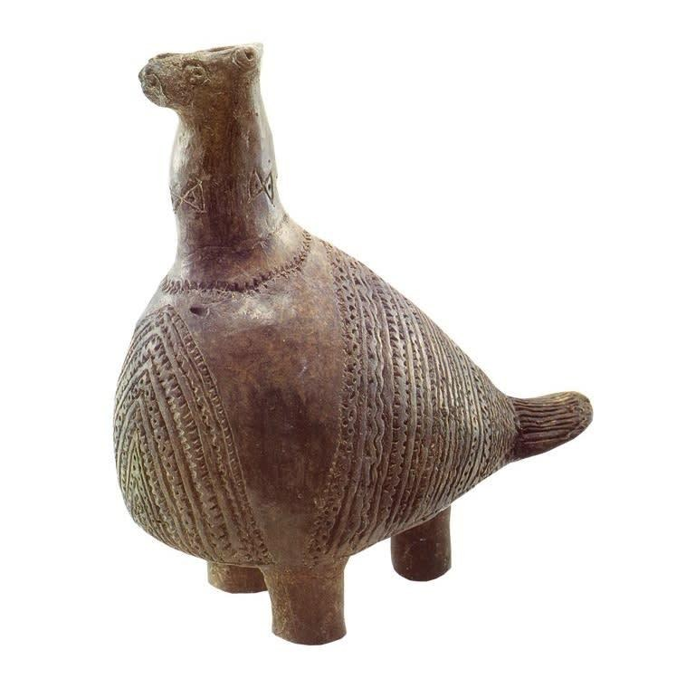

Доисторическая эпоха
До появления государства
Задолго до появления первых государств, письменных источников и самого имени Хорватии земли современной страны уже были пространством интенсивной человеческой жизни. Здесь сохранились следы неандертальцев, первых земледельцев Адриатики, развитых культур медного века и обществ, которые позднее античные авторы начали называть по именам.
История этого пространства начинается не с одной даты и не с одного народа. Она складывается из тысячелетий переселений, контактов и культурных изменений.
125 000 лет
примерный возраст находок из Крапиныоколо 125 000 лет назад
Крапина: люди 125 000 лет назад
Одно из важнейших мест европейской доистории находится в Крапине на севере современной Хорватии.
На холме Хушняково были обнаружены останки неандертальцев, каменные орудия и кости животных. Систематические раскопки здесь начались в 1899 году под руководством хорватского геолога и палеоантрополога Драгутина Горяновича-Крамбергера и продолжались до 1905 года.
Археологи обнаружили около 900 фрагментов человеческих костей, принадлежавших нескольким десяткам людей, а также более тысячи каменных орудий. Крапинское местонахождение стало одной из крупнейших коллекций останков неандертальцев, найденных на одном памятнике.
VII–V тысячелетия до н. э.
От охотников к первым земледельцам
После окончания ледниковой эпохи образ жизни людей постепенно менялся. На Адриатическом побережье появляются сообщества, которые выращивали растения, разводили животных и изготавливали керамику.
Одна из самых ранних неолитических традиций региона известна как культура импрессо. Её керамику украшали отпечатками пальцев, острых предметов и краёв морских раковин. На территории современной Хорватии её памятники известны на побережье и островах — в том числе на Хваре, Цресе, в Далмации и Истрии.
Это был фундаментальный перелом: люди всё чаще жили в постоянных поселениях, занимались земледелием и оставляли после себя всё более сложную материальную культуру.
Что изменилось в неолите?
- Постоянные поселения
- Земледелие
- Разведение домашних животных
- Производство керамики
- Новые формы торговли и обмена
III тысячелетие до н. э.
Вучедол: культура на Дунае
Одним из наиболее ярких явлений европейского медного века стала Вучедольская культура, названная по поселению Вучедол на берегу Дуная недалеко от современного Вуковара.
Её ядро сформировалось в восточной Славонии и Среме, но со временем культурное влияние распространилось далеко за пределы современной Хорватии — на территории Центральной и Юго-Восточной Европы. Классический период Вучедольской культуры относят примерно к 3000–2500 годам до н. э.
Вучедольские поселения демонстрируют уже значительно более сложную организацию общества. Их жители занимались земледелием и животноводством, строили укреплённые поселения и достигли высокого уровня в обработке меди. Археологи нашли печи, формы для литья, медные топоры, кинжалы и другие металлические предметы.

Предмет эпохи
Вучедольская голубка
около III тысячелетия до н. э.
Один из самых узнаваемых археологических предметов Хорватии — небольшой керамический сосуд в форме птицы, традиционно известный как Вучедольская голубка.
Его тёмная поверхность покрыта тонкими геометрическими узорами, характерными для вучедольской керамики. Сегодня этот предмет стал одним из символов древнейшего культурного наследия страны.
В археологической литературе встречается также интерпретация этой птицы как куропатки.
Бронзовый век
Мир укреплённых поселений
Во II тысячелетии до н. э. поселения становятся всё более устойчивыми и укреплёнными. Особенно хорошо этот процесс прослеживается в Истрии, где примерно с 1800 года до н. э. получают распространение укреплённые поселения на возвышенностях — градины.
Они становились центрами небольших территориальных сообществ и продолжали существовать на протяжении бронзового и железного веков. Некоторые из них позднее превратились в важные поселения народов, которых уже знали античные авторы.
Здесь история постепенно меняет характер: вместо культур, известных нам только по археологическим находкам, появляются сообщества, которым письменные источники дают имена.
I тысячелетие до н. э.
Первые народы, известные по имени
В железном веке территория современной Хорватии представляла собой мозаику различных обществ.
- Хистры
- Истрия
- Либурны
- северная и центральная часть Адриатического побережья
- Яподы
- Лика и соседние горные районы
- Делматы
- Далмация
- Паннонские сообщества
- пространства между Савой, Дравой и Дунаем
Железный век начинался в разных частях территории современной Хорватии неодновременно: в Истрии примерно в XI веке до н. э., в Лике — в X веке, а в северной Хорватии приблизительно около 800 года до н. э.
Народы и территории
- Хистры
- Истрия
- Либурны
- Кварнер и северная Далмация
- Яподы
- Лика
- Делматы
- Далмация
- Паннонские сообщества
- Континентальная часть
Истрия
Хистры
Название современной Истрии происходит от народа хистров, населявшего полуостров в железном веке.
Они жили преимущественно в укреплённых поселениях — градинах. Одним из наиболее известных центров был Несакций недалеко от современной Пулы.
Письменные греческие источники начинают упоминать народы восточной Адриатики примерно с VI–V веков до н. э., и с этого момента археология постепенно начинает дополняться письменной историей.
Северная Далмация и Кварнер
Либурны и море
Либурны были тесно связаны с Адриатикой. Их территория простиралась приблизительно от реки Крки в Далмации до восточной части Истрии и включала прилегающие острова.
Море было важнейшей частью их мира: побережье связывало местные сообщества не только друг с другом, но и с Италией, греческими колониями и более широким Средиземноморьем.
Адриатика становится частью Средиземноморского мира
К концу доисторической эпохи восточная Адриатика уже не была изолированной периферией.
По морю распространялись товары, технологии и культурные влияния. На островах и побережье появились греческие поселения, среди которых особенно важными были Исса на современном острове Вис и Фарос на Хваре.
Местные общества всё активнее взаимодействовали с греческим, этрусским и италийским мирами. Позднее к этому пространству всё настойчивее начал приближаться новый политический центр — Рим.
На пороге античности
К III–II векам до н. э. земли современной Хорватии представляли собой сложный мир местных племенных обществ, укреплённых поселений, островных общин и средиземноморских торговых центров.
Не существовало единого государства, которое можно было бы назвать Хорватией, — до появления самого хорватского имени оставалось ещё много столетий.
Но многие особенности региона уже были заметны: различия между Адриатикой и континентом, интенсивные контакты с Центральной Европой и Средиземноморьем и большое значение морских путей.
С усилением Рима начинается совершенно новая глава.
Краткая хронология
- около 125 000 лет назад
Неандертальцы Крапины.
- 6500–4600 гг. до н. э.
Распространение ранненеолитической культуры импрессо в Адриатике.
- III тысячелетие до н. э.
Расцвет Вучедольской культуры.
- около 3000–2500 гг. до н. э.
Классический период Вучедольской культуры и развитая металлургия меди.
- около 1800 г. до н. э.
Распространение укреплённых поселений-градин в Истрии.
- XI–VIII вв. до н. э.
Начало железного века в разных частях территории современной Хорватии.
- VI–V вв. до н. э.
Греческие авторы начинают оставлять письменные сведения о народах восточной Адриатики.
- последние века до н. э.
Усиление греческих и римских контактов и постепенный переход региона от доистории к античной эпохе.
Следующая эпоха